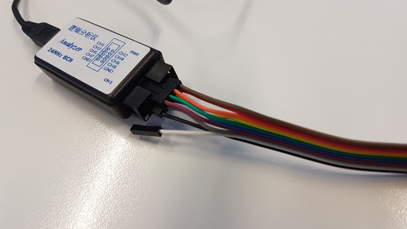
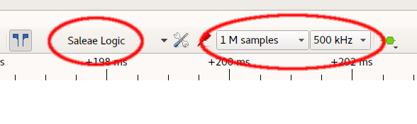
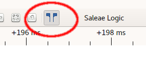

Logic Analyser
Basics
This section will familiarise you with the Pulseview interface.
- Disconnect the SWD programmer from the computer so the board is not powered.
- Open your logic analyser pack and connect the ribbon cable to the channel header. Start at the opposite end of black cable, and connect that to
channel 1. Continue on until all 8 channels are connected, then connect the black cable to Gnd.
- Using jumper wires, connect Gnd to the negative breadboard rail, and channel 1 to pin C13 on the development board (connected internally to the LED
we are flashing).
- Connect the mini-USB cable to the logic analyser, and plug it into you computer. If you are short on USB ports, you can disconnect the serial adapter
at this time. Reconnect the SWD Programmer to provide power to the board.
- Launch pulseview:
pulseview
- Ensure that the device is set to "Saleae Logic", the number of samples to acquire is set to 100 k samples, and the sample rate is set to 20kHz
- In the main window, the traces represent each of the channels of the analyser. D0 is channel 1, D1 is channel 2, and so on. You can rename a channel
by clicking on it's tag.
- You can filter out unused channels by clicking on the red "probe" icon next to the sample selection. In this case, we only have D0 connected, so
click on the probe, select "Disable All", then click on D0. All the unused channels should now be hidden.
- Click the "Run" button near the top of the screen.
- You should now see a trace of the blinking LED. Why is it inverted? Refer to the D2 LED in the schematic and read the comments in the hello world code to understand
why.
Measurement
Here we will use Pulseview to take timing measurements and identify sections of code which may affect timing sensitive operations.
- Click on the "Measurement Calipers" icon from the toolbar, and then drag the left edge to the start of waveform, and the right edge to the start of
the next cycle. How long does the low pulse take? What about the high pulse? Refer back to code and verify the times passed to wait_ms(). Can you explain why
one matches and the other doesn't? Let's investigate...
- We already have edge transitions around the 200ms wait, and we know that is correct, however, the edges around the 1000ms wait also include a
printf(). Let's add some edges around that so we can time it.
- In the code, declare a new DigitalOut pin:
DigitalOut tracer(PC_14);
- Add a low going pulse around the printf() call:
tracer = 0;
pc.printf("Blink\r\n");
tracer = 1;
- Compile and upload your code. You may want to save the binary with a different name.
- Connect channel 2 of the logic analyser to pin C14 on the development board. Don't forget to enable channel D1 in the channel filter.
- Click the "Run" button again to acquire new data.
- Measure how long the printf() call took. Does this account for the discrepancy in the previous times?
- Comment out the printf() call and repeat your measurements. Is the behaviour now as expected?
- Extension exercise: Think about how you can mitigate the impact of the printf call
Triggers
Any half decent logic analyser/oscilloscope allows you to set up conditions to start sampling the data, rather than starting the data collection and
hoping to hit the event you are interested in. Triggers in Pulseview can be set on absolute levels or edge transitions. When combined with the tracer signals
we added in the Measurement exercise, you can quickly narrow your scope of analysis to just the area you interested in.
- Click on the tag for Channel 2/D1.
- Select the transition from high to low as the trigger.
- Click the "Run" button again to acquire new data.
- Observe that acquisition does not start until the tracer signal goes low. Play with the timings to verify that this is the case.
Notice that the trace always starts at the point of the trigger? One of the great things of having a logic analyser that is always sampling is that you
can rewind time, and see events leading up to the trigger.
- Click on the probe icon to the left of the sample count.
- "Change the pre-trigger capture ratio" to 5%.
- Click the "Run" button again to acquire new data.
- Observe that you can now see a small amount of time before the trigger occurs.
Stack Decoder: PWM
One particularly powerful feature of Sigrok/Pulseview is the Stack Decoder. This provides a layer of interpretation over the raw data which makes it
easier to understand what is going on. Since our blinking LED is essentially a low frequency PWM signal, lets investigate it using the PWM stack decoder.
 Click on the Stack Decoder icon to the right of the sample rate. Select the PWM stack decoder.
Click on the Stack Decoder icon to the right of the sample rate. Select the PWM stack decoder.- Click on the newly created PWM channel to configure it: Set the Data line to Channel 1/D0, and the polarity to "active low"
- Observe that the PWM channel shows the duty cycle & period of the waveform.
- Play around with the timing in the code to see how it affects the PWM data.
Stack Decoder: UART
The stack decoders can also parse higher level information. Since we have a serial output in our example, let's take a look at that.
- Move Channel 2/D1 to pin A2 on the board (the transmit line of the serial port).
- Increase the sampling frequency to 50kHz, and re-run the acquisition.
- Add a UART Stack Decoder, and configure it with a 9600 baud rate, and an ASCII data format. Once configured, select Channel 2/D1 as the RX line (if
you do it before, you may trigger a bug which causes the UI to lock up).
- Zoom in to a section of the waveform with activity on the serial line, and you should see the same "Blink" message you saw previously on the serial
terminal.
Next
{kind=link}
{kind=link}
{kind=link}